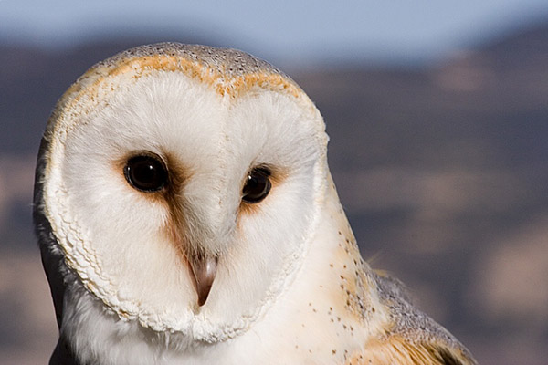

Lechuza
La lechuza común (Tyto alba), también denominada lechuza de los campanarios o lechuza blanca, es una especie de ave estrigiforme perteneciente a la familia Tytonidae. Habitualmente designa especies que, a diferencia de los búhos, no tienen plumas alzadas que parecen orejas. Es una de las aves más ampliamente distribuidas del mundo, pudiendo encontrarse en casi todo el planeta, con excepción de regiones polares o desérticas, Asia al norte de los Himalayas, la mayor parte de Indonesia y algunas islas del Pacífico. El área de distribución de esta rapaz incluye los cinco continentes, en los que podemos encontrar varias subespecies.

La lechuza común es un ave mediana; mide de 33 a 35 cm de longitud
y sus alas poseen una envergadura de 80 a 95 cm, con un peso medio
para los adultos de 350 g, y sin diferencia aparente entre sexos.
Tiene un característico disco facial con forma de corazón y partes
ventrales blancas en T. alba alba, aunque ello puede variar en otras
subespecies. Los tarsos están emplumados, y tienen los dedos cubiertos
con plumas modificadas de color grisáceo.
Las alas son relativamente cortas y redondeadas, lo cual no facilita
los vuelos largos y poderosos, aunque la particular estructura de las
filoplumas, especialmente suaves y desflecadas, dotan a esta rapaz de
un vuelo silencioso, lo que hace que parezca que flotan antes que aletean.
Emiten un grito lastimero y estridente, aunque la gran variedad de sonidos
que producen dificulta la identificación, a excepción del inconfundible siseo
que emite cuando se siente amenazada o cuando las crías piden alimento.
Para cazar se muestran muy observadoras, moviendo imperceptiblemente la
cabeza. En ocasiones se lanza desde una posición elevada. Posee una visión
excelente cuando hay poca luz, y su oído es tan preciso que puede atacar a
su presa en una oscuridad total.
Los ratones y los insectos parecen ser el tipo más común de fuente de
alimento para la lechuza. También consumen gran cantidad de murciélagos
y lagartijas, además de pequeños insectos, también arañas, gusanos y
cucarachas. Pueden pasar muchas horas cada noche en busca de comida y consumiéndola.